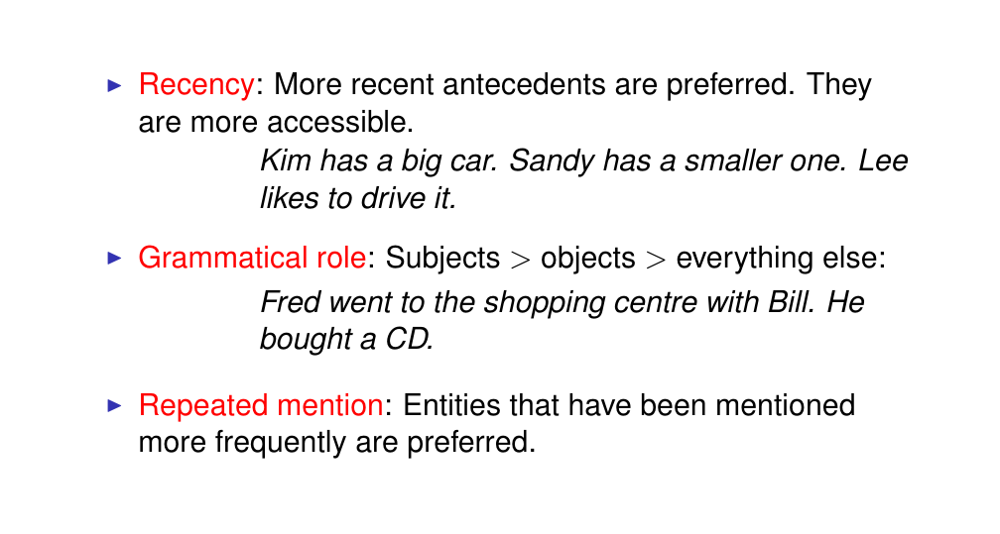
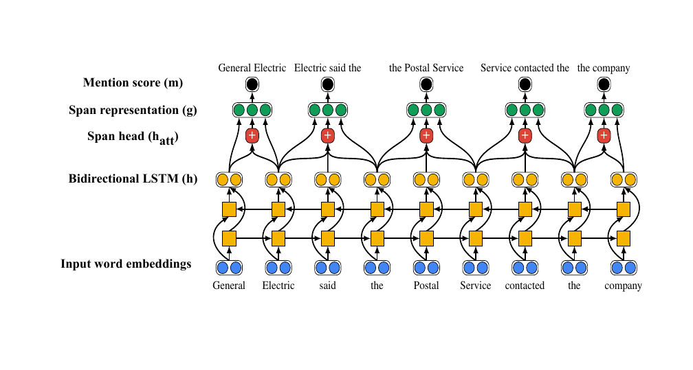

1 Title
2 Outline.
3 Document structure and discourse structure
There is explicit relations between sentences, these are called rhetorical relations. If in a text sentences do not have relations then it will be difficult for us to understand because they will not be coherent
4 Rhetorical relations
Here there is two sentences in this discourse. Individually these sentences are not ambiguous. However, the discourse itself has some ambiguity
- We are describing a sequence of events
The cue phrases, are the relationship between the two sentences. However, these relations are implicit, which means to interpret the whole text we need to be able somehow and derive those relationships between the sentences by analyzing the language of the document
5 Rhetorical relations
They are typically not symmetric, which means there would be a main clause akak nucleus or subsidiary caluse aka the satelite. So here not all sentences are equally important in the document. There would be a main phrase and the satellite phrases would be contributing to these. This is important for analyzing text for instance to do a summary of the text you will want to know which sentences are the main ones. If we then want to interpret the text in a more fine grained we need to understand these relations.
On the other hands some rethorical relations have equal weight for instance when we do Narration. This is when we describe a sequence of events that took place so none of them is more important than the other
6 Rhetorical relations
7 Coherence
8 Coherence
9 Coherence in interpretation
- Explanation here we are explaining that because he=Bill got to Jhon an expensive gift, now Jhon likes Bill
- Justification here we are saying that Jhon likes Bill and because of that he=Jhon is buying it an expensive gift. The latter is the evidence that support the fact that Jhon likes Bill and thus the evidence of his act
10 Factors influencing discourse interpretation
Here the bracket is like an explanations, if is a comma it is likelly to be narration. These are explicit signals, of rethorical relations
11 Discourse parsing
The task of automatically identifying the retorical relations is called discourse parsing.
To conduct discourse parsing it requires to analyse the full text. This is because we need to identify teh relations of all the sentences and derive a tree like structure for the discourse where the main phrases and the subsidiary phrases and so on, so how they connect to each other. If we do that then this would give us a picture of the discourse. But this is difficult to do.
There has been many approaches to that, in early research they use hand crafted rules based on the signals like punctuation , cue ..They treated it as a supervised classification problem where the input is the two sentences and the ouput which rectorial relation is.
12 Outline.
13 Document representations
All these are training for specific task. The features that they capture is task dependent. More general methods we can find:
- Skip-grams word embeddings. These are trained with unlabeled data
14 Learning document representations
Here this is a RNN, we go through the sentence word by word. And per time step
15 Bidirectional LSTM
Uni directional LSTM, is one that we traverse the sentence from beginning to end in one direction. The problem with this is that at each time step we only record representations of the sentence that we have seen so far. To derive a representation for every token we dont consider the context that comes after that token. The problem with that is that the subsequent context is also informative of what this particular token at time t can mean. Ideally we want to incorporate conext in both directions. Thus we use a bidirectional LSTM.
At each token we have two representations the context representation from the beginning of the sentence to the token and the representation of that token after the end of the sentence.
16 What is the sentence representation?
How do we actually obtain the representation of a whole sentence because BiLSTM ouputs representations for individual token. So how do we combine token representations into sentence representations. We have few options here:
We can apply LSTM, then once we have traverse the whole sentence so the last representation at the last token is going to be the sentence representation, as it incorporates the whole sentence. The problem with this is that because LSTM are sequential models, the more recent input(so the last token) is always going to be represented better than early inputs. The cell state tries to mitigiate this however for realistically long sentences we still have the problem that more recent context is better represented by earlier context.
In this way information from all tokens is incorporated equally so we get a representation of a sentence
Here as well we take our hidden representations at all steps and then for each vector component, for each dimensions, we pick the higuest values across all token representations in the sentence and then we put it into the vector sentence.
An attention mechanism basically computes a weighted sum of all hidden representations of all tokens.
17 Attention mechanism
It is a good idea because in fact not all words are equally importnat in the document. For instance if you think of sentiment analysis taks then there is going to be positive, negative and neutral words. So here neutrals are not that relevant thus we need some way how we can put more weight into pos and neg words. For the latter we use the attention mechanism
Humans pay more attention to some words than others. So how do we compute attention weights, we can compute them from learnable parametes in the model, so the vector \(W_\alpha\) and so we learn it FFNN (feed forward neural network) is the hidden representation at time t.
There is different models of attention, sometimes you take the hidden representation and you pass it through a Feed NN, and the use that to compute the attention weights.
Sometimes people take the hidden state and compute the dot product of that with the attention vector. Here if we use a weighted sum then we need to care that our vector add up to 1, so normalize this alpha. And the this give us our final attention weights \(a_t\) and finally the sentence representation is going to be computed as a weighted sum of hiddent states of individual tokes \(h_t\) using the attention weights
The attention weights will not be transferable because we are learning for a task so its really what are the toeksn that provide good features for that task and that is not transferable across tasks
18 Building a document representation
19 Building a document representation
The things that we saw above was to compute sentence representations, now we want document representations.
- This is not a good idea because LSTM suffer from forgetting things from the previous previous inputs.
However attention helps to mittigate this because you can pick important components of the different parts of the document but still the document is pretty long and just picking up separate words here and there and forgetting a lot of the other information is not going to give us a very good model. So this is not a good idea, m
- A much better way is to build a hierarchical model
- First compute sentence representations using a sentence encoder and then we want to take those sentence representations and then
- We want to combine them into a document representation in some way for example a document encoder, or also could be done using attention or perhaps using both. You will then train your model with a document objective with your task objective
20 Hierarchical attention networks
This is a model that came before the transformer.
The idea is that this model has two separate encoders, 1 a sentence encoder, take word representations as inputs, these sentence representations are passed to another encoder which then will represent my document. So we learn specifically to combine sentences into document representations.
This is a good idea because these two encoders can focus on learning different kind of information, so the sentence encoder will learn to compose the meaning of words into the meaning of sentences and your document encoder is going to learn to compose sentences into the document, here is wher potntial rethorical relations can happen and other properties of the document. Then we train our model with our task specific
The larger you make the model the more parameters you need to learn, the larger the dataset you need. If you have a large dataset then you may be better off with more parameters more complex models, if you have a small dataset then you may be better off with a model with fewer paramters that you can tune a simple architecture
Here they use pretrained word embeddings and that is a very good idea because your dataset is not very alrge because then you already starting with an inform position because the word embeddings already capture some general semantic knowledge, so you know in a sense what the words mean and you just need to learn the relations between those words that are relevant to solve your task.
If you have a really long document and you just have one label for it, very often you can predict the label by analysing part of the document and what people do is you want to decide what is a reasonable size of the input to predict from and then just cut that input at some point.
21 Hierarchical attention network
22 HAN output with attention visualised
Here we can visualize this attention weights23 HAN output with attention visualised
24 Outline.
We will now perform another discourse processing task called reference resolution. So besides rhetorical relations and topics and sections and so on.
To perform full task opinion mining we need to retrieve relevant documents, then we need to take this documents and then we need to identify all the mentions of a particular person or person in this company. And we need to link then together to better understand how a particular person is described so for instance: if we want to identify opinions about Joe Biden then we need to identify all the references to Joe biden in the text. For example something that says president Biden, he or him and so on.
So co-reference resolutions is identifying bits of text that refer to the same identity through the discourse.
25 Co-reference and referring expressions
Here there is two people. Niall and Stephen.
- The referent is a real world entity that some piece of text or speech refers to. For instance here we are refering to the prof Ferguson
- The refering expressions, these are the expresions that are used to refer these words
- The antecedent is the text that initially introduces the referent. This is the first time that somebody is mentioned.
- Anaphora this is when we refers to something that is previously mention.
- Cataphora is rare and we use it when we refer to something that is only introduced something later in the text. For instance: She loves her dog, Kim bought her some gifts. So here we mention “She” first and then we ontroduce the name “Kim”.
Anaphora resolution is linking to the correct antecedent so finding what is the real word entity that they are refering to.
We have a lot of noun phrases like: a snappy dresser where it purely plays a descriptive role so they do not refer to anything. To complicate things even more it is not every noun phrase that actually has to refer to something. So these are non-referential phrases because they do no refer to anything. They are also called predicative use.
So in conclusion we have that some noun phrases are not going to refer to anything. But most of them they do
26 Pronoun resolution
Here we want to identify the antecedents of pronouns. So if a sentence contains a pronoun then we want to know which pronoun (he, she and so on) we are referring to.
Here we wat to find the referent so which is the real word entity we are refering to by using the pronoun i.e she, he, we and so on.
So here him refers to Niall Fergusson and he refers to Stephen Moss. So the task here is to be able to link the pronoun to the correct antecedent
27 Pronoun resolution
28 Outline.
29 Coreference resolution as supervised classification
Here our training instances are going to be pairs of refering expressions, for instance pronouns and the possiblle additions, and for each pair we have to automatically ouput if is a correct or incorrect link. So if there is a correct co-reference or not. That is the classification task (binary in this case).
- Our training data you use data where you have correct pairs where you have correct pairs between pronouns and noun phrases and then you want to learn some features from the text that signal that these pronouns co-refer to this noun phrase.
Tipically the way the dataset is constructed for classification is that we would take our sentence that contains a pronoun then we take all the noun phrases in this sentence, we can extract for instance using a parser
We also are going to extract the noun phrases in the preceding five sentences because they also be candidates as well. Why 5 sentences because wea re limited to some extend by human cognitive capacity so actually humans cannot keep track of the pronouns for long texts. We can oly resolve the pronoun if the noun phrase has been mentioned ideally in the same sentence or in the previous sentence. 5 is even larger for us to remember
So in our example we would have all kind of pairs such as “He and Niall Ferguson”, “He and snappy dresser”, “He and Stephen Moss” and so on from the sentence also in the preceding 5 sentences.
A noun phrase is a group of words centered around a noun that functions as a single unit within a sentence. It typically consists of the noun and its modifiers. Here are some examples of noun phrases:
- The big red ball
- Noun: ball
- Modifiers: the, big, red
- My favorite book
- Noun: book
- Modifiers: my, favorite
- An old, dusty suitcase
- Noun: suitcase
- Modifiers: an, old, dusty
- The talented and charismatic actor
- Noun: actor
- Modifiers: the, talented, charismatic
30 Hard constraints: Pronoun agreement
So then we asked to ourselves. How can we build such a system? Answer: the earlier models use hand crafted features, and those were based on how humans understand language. So there is some rules that needs to be observed and those already signal if is a correct or incorrect pairing. So for instance:
Pronoun agreement: here we agree with the noun phrase with the number and gender.
Here in the first example it would be odd to say: “see what he wants” so then when we are referring that needs to be an agreement we mean in gender and also number
In “Kim and Sandy” here the coordinate conjunction makes the pronoun to be “they”
31 Hard constraints: Reflexives
Another hard constraint is “himself, or herself” or so on. These are called reflexive pronouns
32 Hard constraints: Pleonastic pronouns
They are empty and do not refer to anything. In other contest “it” can actually refer to a “dog” i.e “it is hungry”. So this is a complication because we need to determine pleonastic pronouns whether they refer to something or no.
33 Soft preferences: Salience

The soft preferences are not constraints but they are some factors that indicate the right linking
- Recency More recent antecedents ( is the text that initially introduces the referent. This is the first time that somebody is mentioned.) are preferred
- Grammatical role we are more likely to introduce an antecedent as the subject as opposed to an object. So here subjects are preferred
- Repeated mention entities that have been mentioned a lot in the text are also preferred
34 Soft preferences: Salience
Prallelism this means that the pronoun is in the same grammatical position as the noun phrase. So here in the same order, Freud is mention at the end and when we use the pronoun “him” at the end, then we are referring to “Freud”
Coherence effects. Bill in this example Likes Fred, because he=Fred has a great sense of humour. So if we interpreted as having hummor is a reason to like someone then we know he=Fred. Here we are using Justitication because the we are providing evidence
“Jhon likes Bill. He gave him an expensive gift”
- Explanation here we are explaining that because he=Bill got to Jhon an expensive gift, now Jhon likes Bill
- Justification here we are saying that Jhon likes Bill and because of that he=Jhon is buying it an expensive gift. The latter is the evidence that support the fact that Jhon likes Bill and thus the evidence of his act
35 Features
For the models that operate in handcrafted features, you can design features like the ones below:
Slide 25: Cataphoric was defined as pronouns that appear before the referent (this is rare)
- Same verb: here we refer to the reflexive pronouns which must be coreferntial with a preceeding argument of the same verb
- The distance in the text so Recency more recent antecedents are preferred
- Grammatical Role when we are more likely to introduce an antecedent as the subject as opposed to an object. So here subjects are preferred
- The Linguistic form of the noun phrase, so is it a “proper noun” like a name, or is it definite or indefinite such as “a scientist” vs “the scientist” or is it a pronoun itself i.e “You, she, he”. Those are usefull indicators
36 Feature vectors
With these features we can create a feature vector and train a classifier to predict: for each pair of a pronoun and possible antecedent whether is a correct or incorrect link. This is the task. The task is to transfer the dataset using those features and then learn from them.
So here for instance we see construct per each pair a vector (the row in the table) and we fill in the features, (each column) according to this data pair i.e (him, Niall F.)
- Remember each feature would be either: “Binary” or “Discrete”, see slide above
37 Problems with simple classification model
- You dont take into consideration anything else, but just consider pairs in isolations. So you cannot model “repeated effect”
You have problems because you take the isolated pairs and you simply predict for them. The problem is that you cannot implement repeated mention effects, you now how frequent a particular reference expression was, but you just consider pairs in isolation from the rest of the text
- In real text we dont have just co-reference pairs but instead co-reference chains
You are also going to have chains of references. So first you start talking about one person, then using another pronoun we talk about it again, then another noun phrase and so on. This is a chain co-reference. Ideally to build a fuller model of this we actually want to process those chains as well.
38 Neural end-to-end coreference resolution

Here the set up is different from the previous set-up we discuss, they just
39 Task definition
Naninn nankh nnann J Ann AnntnnnANAnt i40 Computing the score s
41 Computing the scoring functions m and c
42 Learning span representations
